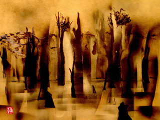
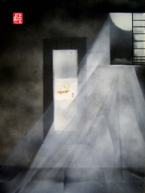
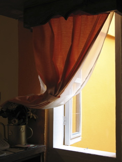
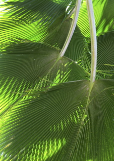
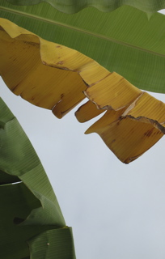
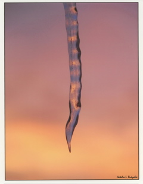
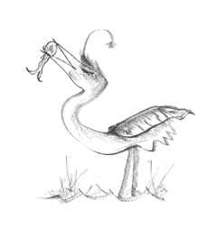
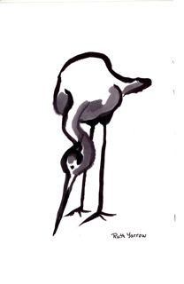
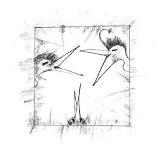
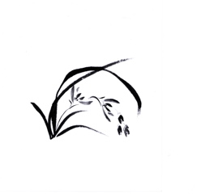

|
|
THE THIRD ANNUAL HERON’S NEST
|
| This year’s cover, created by Jamie Edgecombe, is both striking and subtle. Describing the techniques he employed to create his two selected pieces, Jamie wrote: “The undercoat / sketch, which comes through the later layers, is made in a suiboku / sumi-e style. The painting is then layered with white and black spray paint, using homemade stencils and free spray-painting. Although I use modern painting methods for the second stage, I still bear in mind the idea of negative spaces employed in both suiboku and sumi-e.” The illustration you see below will be folded twice in the middle to form a spine. The front is to the right side. |

Cover: Jamie Edgecombe Tavistock, Devon, England |
| Using the same mixed-media techniques, Mr. Edgecombe came up with this second fine painting. It will be used to lead into the overview of Volume IX. |

Overview: Jamie Edgecombe Tavistock, Devon, England |
| We were delighted by five magnificent photographs. The first three, by C. Avery, will open Nest issues which appeared in spring, summer, and fall of last year. Spring is nicely depicted by this colorful welcoming in of the out-of-doors: |

Spring: C. Avery Kailua, Kona, Hawaii |
| And here is shade for those hot summer days: |

Summer: C. Avery Kailua, Kona, Hawaii |
| An implication of autumn, this single, spent banana leaf is not without a touch of humor when viewed in context with the notion of being a kigo. |

Autumn: C. Avery Kailua, Kona, Hawaii |
| Holding within it the colors of the sky, Natalia Rudychev’s icicle is a splendid seasonal reference. |

Winter: Natalia L. Rudychev DesPlaines, Illinois |
| Doris Thurston’s simple cartoon-like drawings are delightful, her humor contagious. Both of renderings capture the spirit of the Readers’ Choice Awards, providing a sense of celebration as well as comic relief. The first drawing will begin the Readers’ Choice Awards section. |

Readers’ Choice Awards: Doris Thurston Port Townsend, Washington |
| Ruth Yarrow’s graceful sumi-e heron is bent forward in search of food. We imagine that, at this point in Volume IX, readers will likewise be looking eagerly forward to learn results of the contest and which poems received the most votes from our readers. Ruth’s painting will seque into the Readers’ Choice Awards overview. |

Readers’ Choice Overview: Ruth Yarrow Seattle, Washington |
| Doris Thurston’s second drawing furnishes us with an amusing start to the “Readers’ Comments” portion of the awards section. |

Readers’ Comments: Doris Thurston Port Townsend, Washington |
| Sandra Simpson’s sumi-e painting introduces the “special mention” section. The graceful bend of the leaves and the flower stalk beckon us forward to read still more of the poems that received high scores from readers. |

Special Mentions: Sandra Simpson Tauranga, New Zealand |
| We keenly feel Christopher Patchel’s inspiration in his photograph of an empty bench, silhouetted against a pink stripe of sunset (or sunrise), Venus in the distance. Somehow this image evokes a sense of possibility, as well as that of loss, both elements we sought for to introduce the Kay Anderson memorial. |
Memorial: Christopher Patchel Chicago, Illinois |
We applaud the winners of the third annual Heron’s Nest Illustration Contest and are grateful to all of the artists who participated.
Christopher Herold
Managing Editor
back to top.